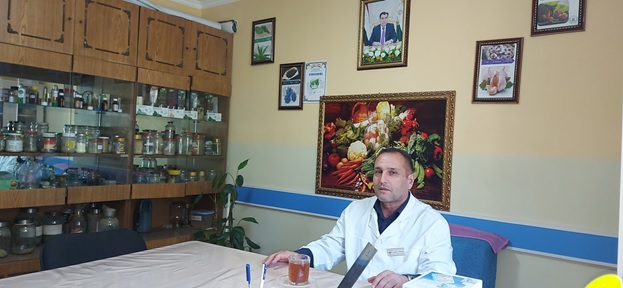

 Табибони Марказ бо усули гиёҳдармонӣ табобати захми меъдаю рӯда, бо гиёҳҳои ангат, зуф, зирк, шимок, зағир, сабур ба роҳ мондаистода, табобати сутунмӯҳра (чура), бемориҳои узвҳои ҳаракат, асаб, ва рагҳои хунгардва дигар бемориҳои даруниро табобат менамоянд. Дар давоми 9-моҳи соли равонбоусулҳои гиёҳдармонӣ ба 299 - нафар, биоэнергошифоӣ 38-нафар, доплерӣ (УЗИ) 778-нафар, узвҳои такъя ва ҳаракат 203-нафар, маҳсдармонӣ -126 нафар, табиатшифоӣ 30-нафар, бемориҳои асаб 15-нафар аз хизматрасонӣ бо усулҳои тибби халқӣ ва истифода аз воситаҳои тибби муосир гузаронида дар маҷмӯъ ба миқдор 1489–нафар дар Марказ табобат гирифтанд.
Марказ дар асоси «Иҷозатнома»-и силсилаи Т-ИФ №0001300-и Агентии назорат дар соҳаи маориф ва илми назди Президенти Ҷумҳурии Тоҷикистон аз 14.07.с.2021, №468 фаъолият намуда, оид ба ҳуқуқи пешбурди фаъолияти таълимӣ, ташхисӣ, табобатӣ, фармасевтӣ амал карда, аз рӯйи ихтисосҳои гиёҳдармонӣ, сӯзандармонӣ, шулукдармонӣ, маҳсдармонӣ, корманди хурди тиб (парастор), тозакор (санитарка), табиатшифоӣ мутахассисони тибби халқиро омода месозад. Оид ба ихтисосҳои болозикр Стандартҳои давлатии ихтисос, нақшаҳои таълимӣ ва барномаҳо таҳия ва тасдиқ гардидаанд. Ҳамзамон бояд қайд кард, ки сохтори КВД «Марказиҷумҳуриявии тибби халкӣ»-и Вазорати тандурустӣ ва ҳифзи иҷтимоии аҳолии Ҷумҳурии Тоҷикистон ба талаботи сохтории муассисаҳои таҳсилоти касбомӯзии (бозомӯзӣ) Ҷумҳурии Тоҷикистон ҷавобгӯ мебошад. Дар ҷодаи солимгардонии аҳолӣ бо усулҳои хизматрасонии тибби халқӣ низ давра ба давра шароитҳои мусоид фароҳам оварда истода, фаъолияти ин самт рӯ ба рушду нумӯъ қарор дорад. Қайд кардан зарур аст, ки барои барқароргардонии саломатӣ баъди гузаронидани касалии сироятии “COVID-19” табибони КВД «Маркази ҷумҳуриявии тибби халқӣ» низ ҳиссаи худро гузошта истодаанд. Аз ҷумла корҳои тарғиботиву ташфиқотиро байни аҳолӣ мунтазам давом дода истода аз хусусиятҳои шифоӣ, таъсири фармокологӣ ва истифодаи дурусти гиёҳҳои шифобахши ватанӣ, дастраси шаҳрвандон гардонида истодаанд,
Баҳри беҳбудӣ бахшидан ба сатҳу сифати хизматрасонии тиббӣ, аз ҷумла хизматрасонии тибби халқӣ ба аҳолӣаз самтҳои муҳиме, ки ба рушди соҳаи тандурустӣ ва ҳифзи иҷтимоии аҳолӣ равона карда шудааст ин тавассути мутахассисони соҳавӣ, дастрас гардидани хизматрасонӣ ба ҳама табақаҳои аҳоли ва минтақаҳои дуру назидики аҳолинишин мебошад. Хамзамон давра ба давра ташкил намудани курсҳои бозомӯзӣ дар миёни ҳамаи зинаҳои кадрии соҳа, барои солимии аҳли ҷомеа ва тандурустии он тамоми шароит фароҳам овардан аст. Аз ин лиҳоз Корхонаи воҳиди давлатии «Маркази ҷумҳуриявии тибби халқӣ» тибқи Оинномаи Марказ филиалҳои худро , ки то айни ҳол танҳо дар вилояти Суғд, шаҳри Хуҷанд фаъолият дошт, ҳоло мувақатан аз моҳи марти соли равон бинобар ворид намудани замимаҳо ба Иҷозатномаи Марказ фаъолияти филиалҳои дигар боздошт гардидаанд.